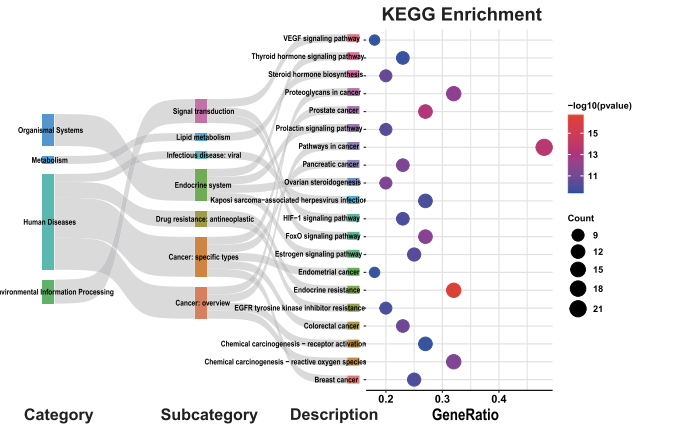
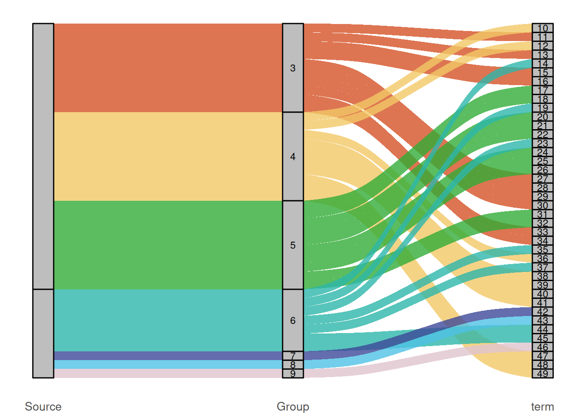

# Installing necessary packages
if (!requireNamespace("tidyverse", quietly = TRUE)) {
install.packages("tidyverse")
}
if (!requireNamespace("readr", quietly = TRUE)) {
install.packages("readr")
}
if (!requireNamespace("ggalluvial", quietly = TRUE)) {
install.packages("ggalluvial")
}
if (!requireNamespace("patchwork", quietly = TRUE)) {
install.packages("patchwork")
}
# Load packages
library(tidyverse)
library(readr)
library(ggalluvial)
library(patchwork)Sankey Bubble plot
Example

Setup
System Requirements: Cross-platform (Linux/MacOS/Windows)
Programming language: R
Dependent packages:
tidyverse;readr;ggalluvial;patchwork
Data Preparation
We imported pathway enrichment data from DAVID for network pharmacology annotation analysis.
# Load data
data <- read_tsv("files/DAVID.txt")
# Add a new categorical column
get_category <- function(cat) {
if (grepl("BP", cat)) return("BP")
if (grepl("MF", cat)) return("MF")
if (grepl("CC", cat)) return("CC")
if (grepl("KEGG", cat)) return("KEGG")
return(NA)
}
data$MainCategory <- sapply(data$Category, get_category)
# Remove SMART and NA
data2 <- data %>%
filter(!grepl("SMART", Category)) %>%
filter(!is.na(MainCategory))
# Sort each category and take the top 10
topN <- function(data, n=10) {
data %>%
arrange(desc(Count), PValue) %>%
head(n)
}
result <- data2 %>%
group_by(MainCategory) %>%
group_modify(~topN(.x, 10)) %>%
ungroup()
# KEGG pathway annotation
result <- result %>%
mutate(
Source = ifelse(MainCategory == "KEGG", "KEGG", "GO"),
KEGG_Group = case_when(
MainCategory == "KEGG" & str_detect(Term,"Neuro|synapse|neurodegeneration|Alzheimer|Parkinson|Prion") ~ "Nervous system",
MainCategory == "KEGG" & str_detect(Term, "Cytokine|inflammatory") ~ "Immune system",
MainCategory == "KEGG" & str_detect(Term, "Lipid|atherosclerosis") ~ "Lipid metabolism",
MainCategory == "KEGG" ~ "Other KEGG",
TRUE ~ NA_character_
),
GO_Group = ifelse(MainCategory != "KEGG", MainCategory, NA)
)
alluvial_data <- result %>%
mutate(
Term = str_replace(Term, "^GO:\\d+~", ""), # Remove GO number
Term = str_replace(Term, "^hsa\\d+:?", "") # Remove KEGG number
)
# GO Section
go_links <- result %>%
filter(Source == "GO") %>%
transmute(
Source = Source,
Group = GO_Group,
Term = Term,
Count = Count
)
# KEGG Section
kegg_links <- result %>%
filter(Source == "KEGG") %>%
transmute(
Source = Source,
Group = KEGG_Group,
Term = Term,
Count = Count
)
# Generate Sankey diagram data
alluvial_data <- result %>%
mutate(Group = ifelse(Source == "KEGG", KEGG_Group, GO_Group)) %>%
select(Source, Group, Term, Count, FDR, FoldEnrichment, MainCategory)
# Ensure character type
alluvial_data$Source <- as.character(alluvial_data$Source)
alluvial_data$Group <- as.character(alluvial_data$Group)
alluvial_data$Term <- as.character(alluvial_data$Term)
# Bind
alluvial_data <- bind_rows(go_links, kegg_links)
# Arrange the term column in ascending order of count value, and ensure that the bubble chart and Sankey chart are in the same order
term_levels <- alluvial_data %>%
arrange(Source, Group, desc(Count)) %>%
pull(Term) %>%
unique()
alluvial_data$Term <- factor(alluvial_data$Term, levels = term_levels)
# View data structure
head(alluvial_data, 5)# A tibble: 5 × 4
Source Group Term Count
<chr> <chr> <fct> <dbl>
1 GO BP GO:0010628~positive regulation of gene expression 12
2 GO BP GO:0045944~positive regulation of transcription by RNA pol… 11
3 GO BP GO:0007187~G protein-coupled receptor signaling pathway, c… 10
4 GO BP GO:0007268~chemical synaptic transmission 10
5 GO BP GO:0006954~inflammatory response 10Visualization
1. Sankey Diagram
# Sankey diagram (the Term column does not display labels)
# Ensure Group is of character type and does not contain NA
alluvial_data$Group <- as.character(alluvial_data$Group)
alluvial_data$Group[is.na(alluvial_data$Group)] <- "Other"
# Calculate the total Count of each Group
group_order <- alluvial_data %>%
group_by(Group) %>%
summarise(group_count = sum(Count, na.rm = TRUE)) %>%
arrange(desc(group_count)) %>%
pull(Group)
# Set group to an ordered factor
alluvial_data$Group <- factor(alluvial_data$Group, levels = group_order)
# Sort the Term column and set term as an ordered factor
term_order <- alluvial_data %>%
group_by(Term) %>%
summarise(total_count = sum(Count, na.rm = TRUE)) %>%
arrange(desc(total_count)) %>%
pull(Term)
alluvial_data$Term <- factor(alluvial_data$Term, levels = term_order)
# Retrieve the ordered labels of the group
group_labels <- levels(alluvial_data$Group)
group_labels <- c("BP", "MF", "CC", "Nervous system", "Immune system", "Lipid metabolism", "Other KEGG")
term_labels <- levels(alluvial_data$Term)
p1 <- ggplot(
alluvial_data,
aes(axis1 = Source, axis2 = Group, axis3 = Term, y = 1)) +
geom_alluvium(aes(fill = Group), width = 1/12, alpha = 0.8) +
geom_stratum(width = 1/12, fill = "grey", color = "black") +
scale_fill_manual(values = c(
"BP" = "#33ad37","MF" = "#f2c867","CC" = "#d45327",
"Nervous system" = "#2eb6aa", "Immune system" = "#3e4999",
"Lipid metabolism" = "#4fc1e4", "Other KEGG" = "#e0c4ce")) +
geom_text(stat = "stratum", aes(label = ifelse(
after_stat(stratum) %in% group_labels, after_stat(stratum),
ifelse(after_stat(stratum) %in% term_labels, after_stat(stratum), "")
)), size = 3) +
scale_x_discrete(
limits = c("Source", "Group", "Term"),
labels = c("Source", "Group", "term"), expand = c(.05, .05)) +
labs(title = NULL, y = NULL, x = NULL) +
theme_minimal(base_size = 12) +
theme(
axis.title.x = element_blank(),
axis.text.x = element_text(size = 10),
axis.text.y = element_blank(),
axis.ticks.y = element_blank(),
plot.margin = margin(5, 5, 5, 5), # This is consistent with p2
panel.grid = element_blank()
) +
guides(fill = "none")
p1

2. Bubble Plot
# Bubble plot (Term label only on the right)
# Prepare term_levels first, making sure the order is consistent with the y-axis
term_levels <- levels(alluvial_data$Term)
# Generate bubble plot data
alluvial_data <- result %>%
mutate(Group = ifelse(Source == "KEGG", KEGG_Group, GO_Group)) %>%
select(Source, Group, Term, Count, FDR, FoldEnrichment, MainCategory)
p2 <- ggplot(alluvial_data, aes(x = log2(FoldEnrichment), y = Term)) +
# Segment: from x = min_x - offset to x = log2(FoldEnrichment)
geom_segment(aes(
x = min(log2(FoldEnrichment), na.rm = TRUE) - 0.5,
xend = log2(FoldEnrichment),
y = Term, yend = Term),
linetype = "dashed", color = "grey50") +
# Left label
geom_text(aes(
x = min(log2(FoldEnrichment), na.rm = TRUE) - 0.2,
label = Term
), hjust = 1, size = 3) +
# Bubble
geom_point(aes(size = Count, color = -log10(FDR))) +
scale_y_discrete(limits = rev(term_levels), position = "right") +
scale_color_gradient(low = "#4659a7", high = "#de4f30") +
labs(title = NULL, x = "log2(FoldEnrichment)", y = NULL, color = "-log10(FDR)") +
theme_minimal() +
theme(
axis.text.y.left = element_blank(),
axis.text.y.right = element_blank(), # No label is displayed on the right
axis.title.y = element_blank(),
plot.margin = margin(5, 5, 5, 0),
panel.grid.major.y = element_blank()
)
p23. Combine
combined_plot <- p1 + p2 + plot_layout(widths = c(1.5, 2), guides = "collect")
print(combined_plot)